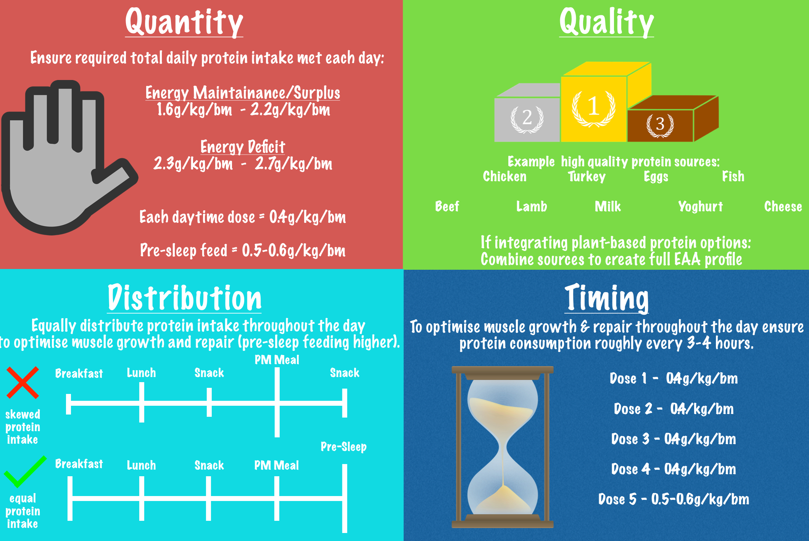
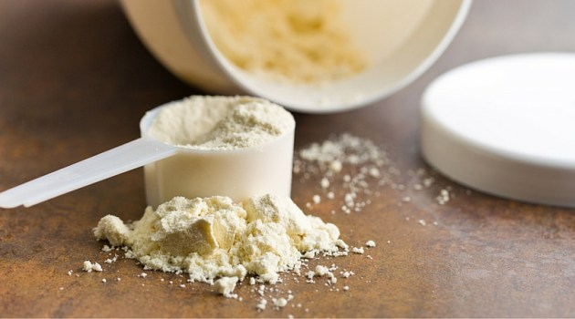
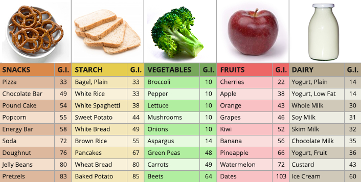
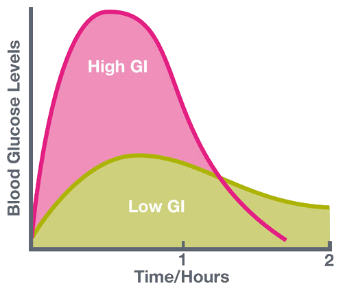
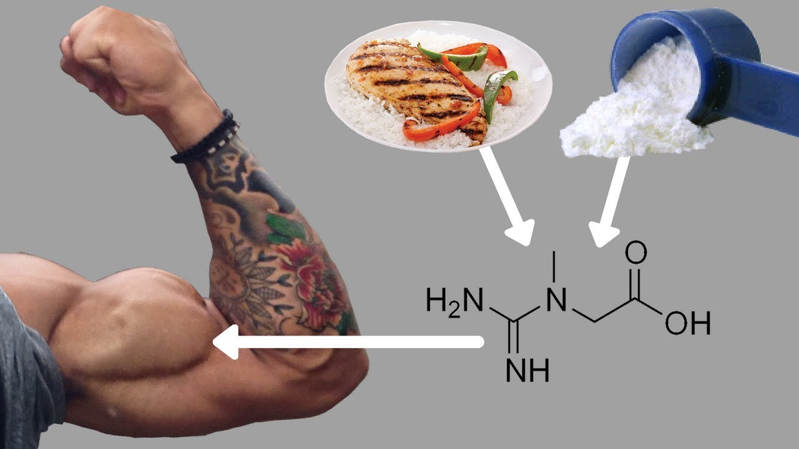
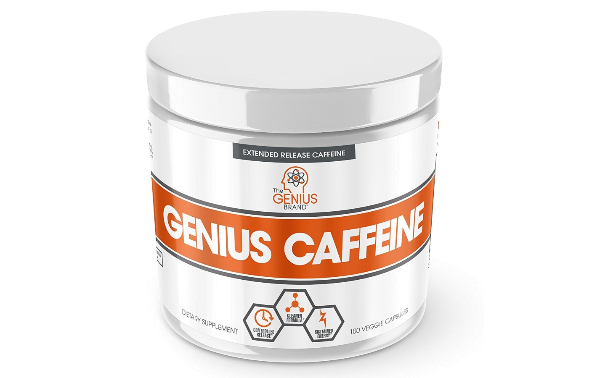

BASICS OF NUTRITION
The high levels of muscle growth and repair achieved by bodybuilders require a specialized diet. Generally speaking, bodybuilders require more calories than the average person of the same weight to provide the protein and energy requirements needed to support their training and increase muscle mass. In preparation of a contest, a sub-maintenance level of food energy is combined with cardiovascular exercise to lose body fat.
Proteins, carbohydrates and fats are the three major macronutrients that the human body needs in order to build muscle. The ratios of calories from carbohydrates, proteins, and fats vary depending on the goals of the bodybuilder.
PROTEIN
Current recommendations suggest that bodybuilders should consume 25–30% of protein per total calorie intake to further their goal of maintaining and improving their body composition.
This is a widely debated topic, with many arguing that 1 gram of protein per pound of body weight per day is ideal, some suggesting that less is sufficient, while others recommending 1.5, 2, or more.
Efficient protein intake, according to Josh Dyson
There is also some debate concerning the best type of protein to take. Chicken, turkey, beef, pork, fish, eggs and dairy foods are high in protein, as are some nuts, seeds, beans, and lentils. Casein or whey are often used to supplement the diet with additional protein.
Whey protein is the type of protein contained in many popular brands of protein supplements and is preferred by many bodybuilders because of its high Biological Value (BV) and quick absorption rates. Whey protein also has a bigger effect than casein on insulin levels, triggering about double the amount of insulin release. That effect is somewhat overcome by combining casein and whey. Bodybuilders are usually thought to require protein with a higher BV than that of soy, which is additionally avoided due to its claimed estrogenic properties.
Whey protein powder
CARBOHYDRATES
Carbohydrates play an important role for bodybuilders. They give the body energy to deal with the rigors of training and recovery.
Carbohydrates also promote secretion of insulin, a hormone enabling cells to get the glucose they need. Insulin also carries amino acids into cells and promotes protein synthesis. Insulin has steroid-like effects in terms of muscle gains. It is impossible to promote protein synthesis without the existence of insulin, which means that without ingesting carbohydrates or protein—which also induces the release of insulin—it is impossible to add muscle mass.
Glycemic index (G.I.) chart for carbohydrate rich foods
Bodybuilders seek out low-glycemic polysaccharides and other slowly digesting carbohydrates, which release energy in a more stable fashion than high-glycemic sugars and starches. This is important as high-glycemic carbohydrates cause a sharp insulin response, which places the body in a state where it is likely to store additional food energy as fat.
Comparison between low G.I. vs high G.I. food consumption, regarding blood sugar leveles in time
MOST NOTABLE SUPPLEMENTS
Bodybuilding supplements are dietary supplements commonly used by those involved in bodybuilding, weightlifting, mixed martial arts, and athletics for the purpose of facilitating an increase in lean body mass. The intent is to increase muscle, increase body weight, improve athletic performance, and for some sports, to simultaneously decrease percent body fat so as to create better muscle definition.
CREATINE
Creatine is an organic acid naturally occurring in the body that supplies energy to muscle cells for short bursts of energy (as required in lifting weights) via creatine phosphate replenishment of ATP. A number of scientific studies have shown that creatine can improve strength, energy, muscle mass, and recovery times.
Besides supplements, creatine can be found naturally in foods like salmon and beef
Creatine can improve health and athletic performance in several ways:
- In high-intensity exercise, its primary role is to increase the phosphocreatine stores in your muscles.
- Can increase satellite cell signaling, which aids muscle repair and new muscle growth.
- Lifts water content within your muscle cells, which causes a cell volumization effect that may play a role in muscle growth.
- Elevated levels of the protein myostatin can slow or totally inhibit new muscle growth. Supplementing with creatine can reduce these levels, increasing growth potential.
Creatine also has a number of health benefits on the brain by improving conditions such as Altzheimer's disease or epilepsy. On the other side, some people believe that creatine is unsafe and has many side effects, but these are not supported by evidence.
CAFFEINE
Caffeine is a central nervous system (CNS) stimulant.
Caffeine is classified by the US Food and Drug Administration as generally recognized as safe. Toxic doses, over 10 grams per day for an adult, are much higher than the typical dose of under 500 milligrams per day.
Regarding its physical effects, Caffeine improves muscular strength and power, and may enhance muscular endurance. Caffeine also enhances performance on anaerobic tests. Caffeine consumption before constant load exercise is associated with reduced perceived exertion. While this effect is not present during exercise-to-exhaustion exercise, performance is significantly enhanced.
Although it's mostly consumed by drinking coffee or other beverages, there are many more ways in which it can be administered: pills, powders, inhalants and so on.
An example of caffeine pills, with extended, slower absorption
CALORIC INTAKE CALCULATOR